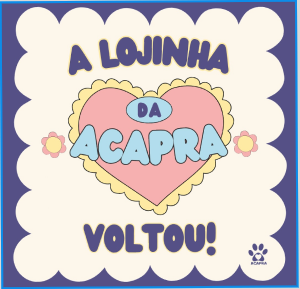
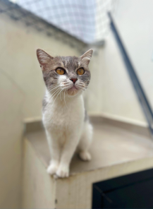
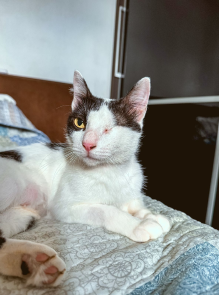

Quem Somos
A ACAPRA é uma ONG dedicada à proteção animal na região de Brusque. Com muito amor e esforço, contamos com a ajuda de voluntários para realizar resgates, arrecadar recursos e oferecer lares temporários aos animais que foram abandonados ou sofreram maus-tratos.
Leia mais sobre nossa históriaAnjinhos esperando um lar
 Frajola
Frajola Caramelo
CarameloLuna
Thor